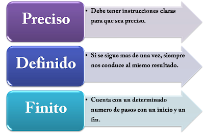
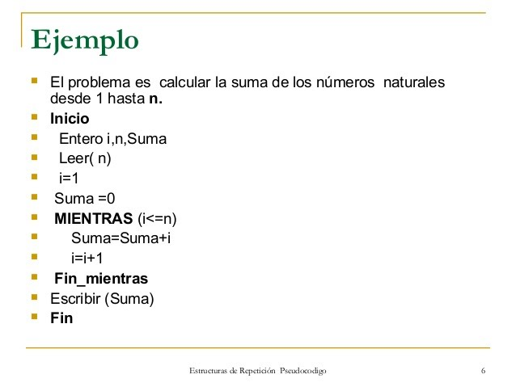

Debes comenzar aprendiendo la logica de programación no tanto un lenguaje ya que te vas a confundir con la sintaxis, lo que debes de aprender es entender que hace un pedazo de codigo no aprenderte la sintaxis.
Lo que deves de ver son algoritmos, pseudocodigos y diagramas de flujo. Ya que ellos te ayudan a mejorar tu logica para resolver problemas ya que tengas eso bien definido como hacerlos, ya lo pasamos a un lenguaje en forma de codigo.
Qué son los algoritmos?
En matemáticas, lógica, ciencias de la computación y disciplinas relacionadas, un algoritmo es un conjunto de instrucciones o reglas definidas y no-ambiguas, ordenadas y finitas que permite, típicamente, solucionar un problema, realizar un cómputo, procesar datos y llevar a cabo otras tareas o actividades. En otras palabras te ayudan a resolver un problema y/o necesidad por medio de instrucciones precisas. Todo algoritmos ebe de tener un inico y fin. Mas comunmente vemos los algoritmos en los recetarios.

Qué son los pseudocodigos?
En ciencias de la computación, y análisis numérico, el pseudocódigo es una descripción de alto nivel compacta e informal del principio operativo de un programa informático u otro algoritmo. Un pseudocodigos es la manera mas clara de leer un algoritmo tanto para una persona normal o un programador.

Qué son los diagramas de flujo?
El diagrama de flujo o flujograma o diagrama de actividades es la representación gráfica de un algoritmo o proceso. Se utiliza en disciplinas como programación, economía, procesos industriales y psicología cognitiva. En programación es el mas sercano a leer un programa por medio de figuras, y cada figura tiene su significado como en un lenguaje de programcion.